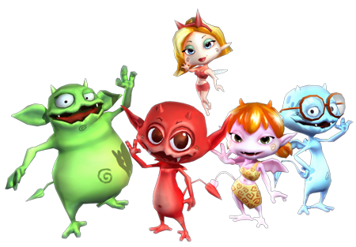

5 |
Historia |
 |
 En un lugar lejano vivía antiguamente un pueblo de pequeños seres extraños en las profundidades del Abismo. Cocoto, sus amigos los diablillos y Fairy, un hada misteriosa, protegen en una olla mágica el secreto del magma, fuente de su poder. Zaron, dios del rayo, codicia esta fuerza y planea algo para conseguirla... Zaron
reina sobre Heaven, el reino del cielo. Para conseguir lo que ansía,
cuenta con los soberanos de otros reinos que Cocoto deberá atravesar. |
 |
 |
 |